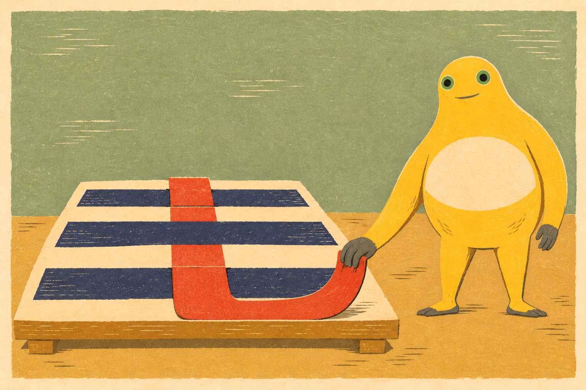
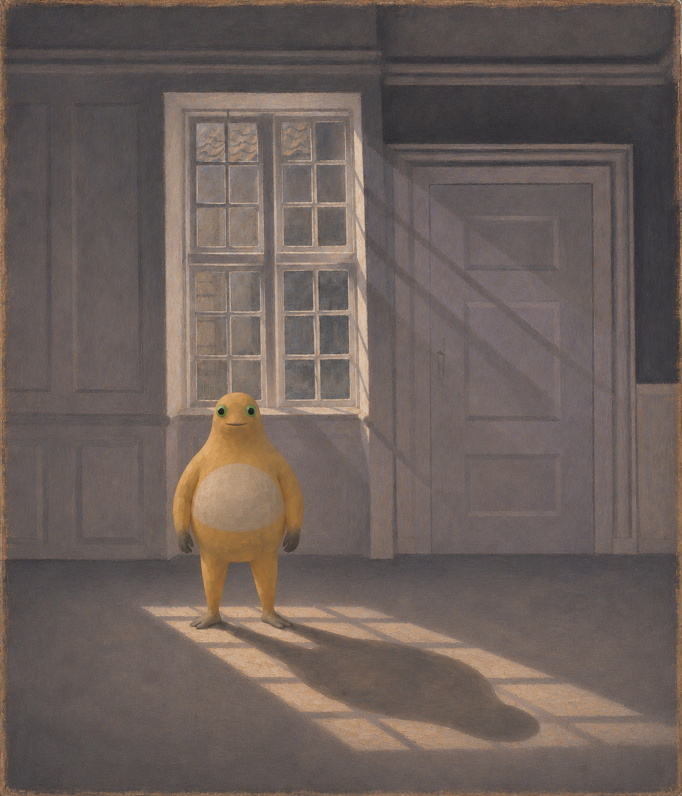

← 创作手记2026-11-12 · 一条红带，一块缺光
阶段记录，不是全天总结。研究版本不计定稿；实际变化、局限与下一问题分别记录。
红色轮流露面
红纸在三道靛蓝横带之间轮流露面，转到桌边，又接回奶蛙手里。一次轻轻的提拉，让静止的横线有了先后。

红色轮流露面 · V2 · 采用的定稿版本；AI辅助二维创作。让连续红纸条与三道横带形成上、下、上的遮挡节奏。
V1手持部分与中央红条断开；V2接通了两段。采用V2。弯曲处更像预裁曲线，而非直纸条的真实弯折；版画表面是二维模拟，并无实体刻印。
下一问题（尚未实施）：下一次可用更直的带材检验折转与拉力。
光在脚边缺了一块
窗格把光铺到地上，奶蛙站在亮处边缘。脚后的影子占去一块暖色，房间仍然安静，却不再空着。

光在脚边缺了一块 · V2 · 采用的定稿版本；AI辅助二维创作。身体进入空室后，能否靠脚边光带的中断让重量可见？
V1的完整影子被画框截断；V2缩小并向左后移，影子留在画内。短笔触统一身体与室内。人物加入改变了原作的空室经验，并非原画复刻。
下一问题（尚未实施）：下一次比较更小的遮光面积是否仍能留下在场感。
来源与阅读
Sunbeams or Sunlight. Dust Motes Dancing in the Sunbeams 具体历史原作，仅外链，不转载参考照片。